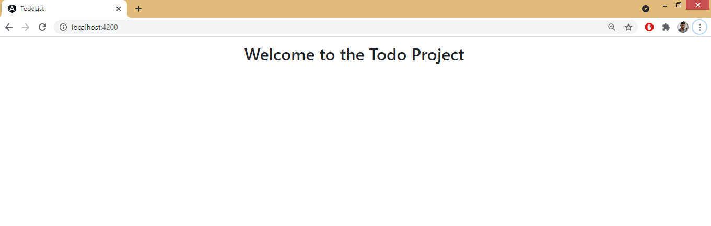
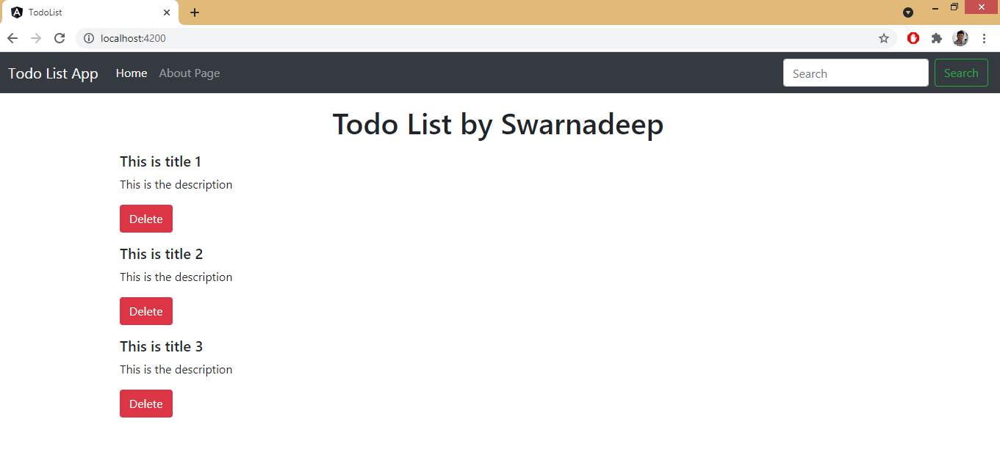
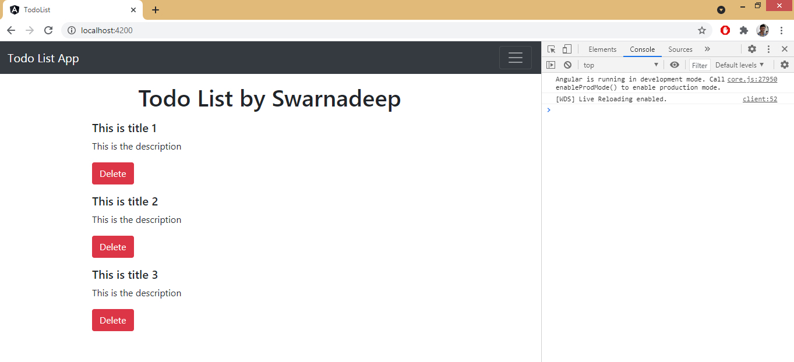
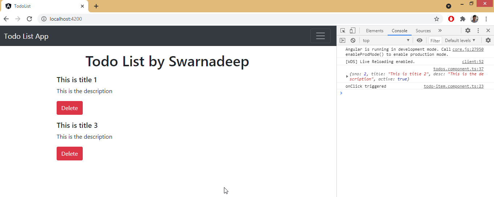
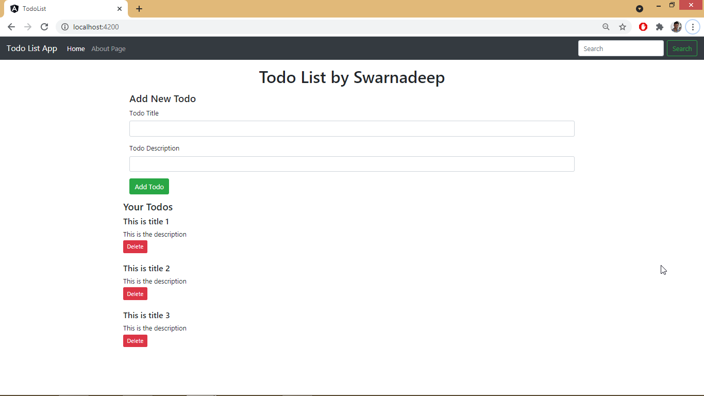
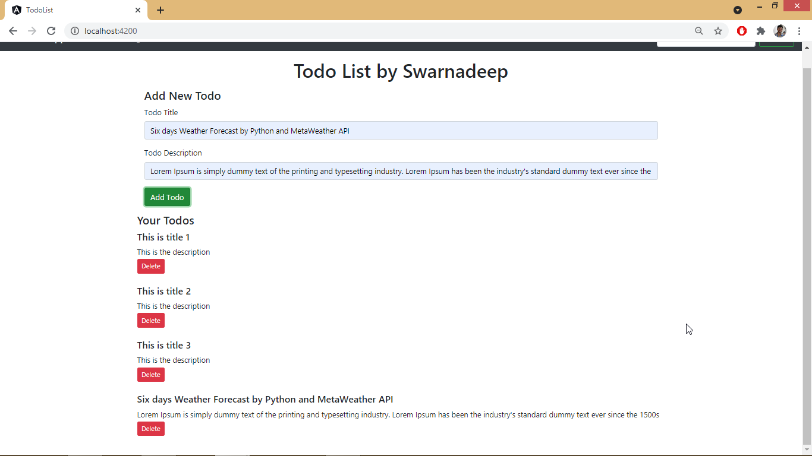
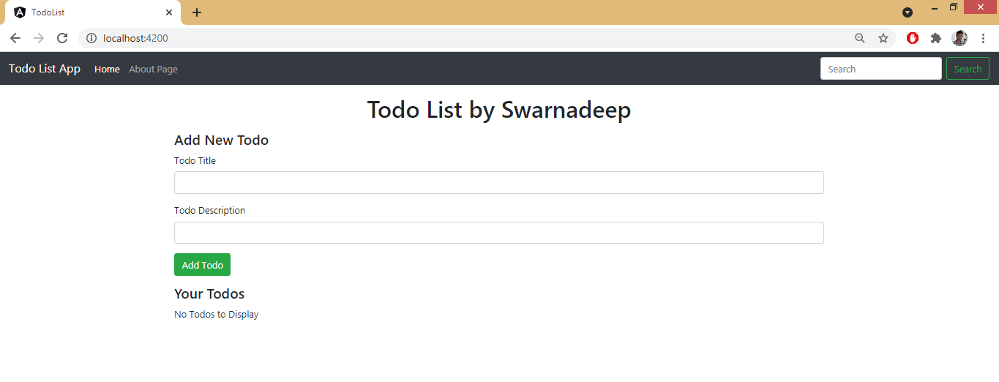
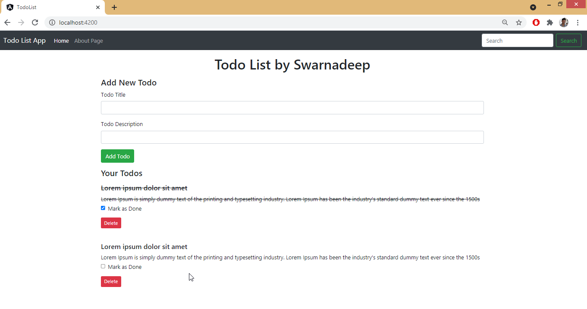
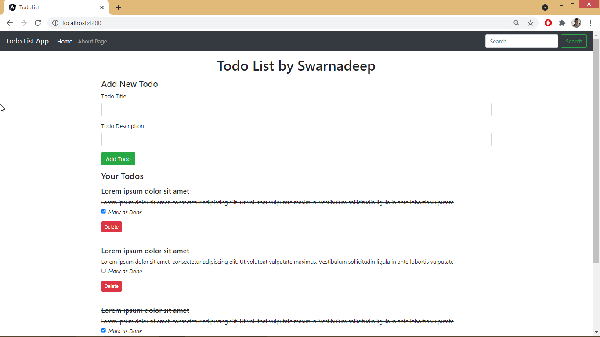
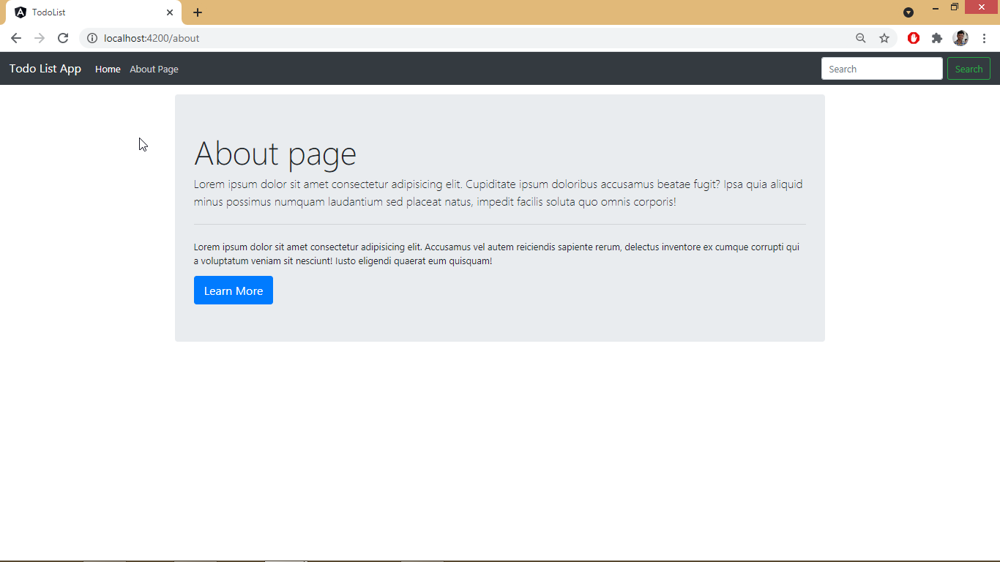

Prerequisite Installation
>ng new TodoList
>cd Todolist
>npm install bootstrap
>npm install jqueryConfigure angular.json
"architect": {
"build": {
"styles": [
"src/styles.css",
"./node_modules/bootstrap/dist/css/bootstrap.min.css"
],
"scripts": [
"./node_modulFes/jquery/dist/jquery.min.js",
"./node_modules/bootstrap/dist/js/bootstrap.js"
]
},Welcome Page

Used 3 components :
app component – for the homepage header and footer
todos component – for the whole Todo List content
todo-item component – for individual todo item which will be populated below the todo list
add-todo Component – to add new todo
app.component.html
Paste bootstrap navbar and generate a component todos .
Map todos component in app component by adding this :
<app-todos></app-todos>
app.component.ts
export class AppComponent {
title = 'TodoList';
constructor() {
// Timeout function will change the title without PAGE RELOAD
setTimeout(() => {
this.title = "Changed Title";
}, 2000);
}
}Todo.ts - Created a Todo Model
Todo.ts is a Angular Model Class This is a model to generate lot of Todo in todo list.
export class Todo{
sno:number
title:string
desc:string
active:boolean
}todos.component.html
<ul *ngFor="let todo of todos">
<!-- Creating a Custom Attribute [todo] and passing "todo" in app-todo-item -->
<app-todo-item [todo]="todo"></app-todo-item>
</ul>todos.component.ts
Created a todos Array which is of type Todo Model Class and put some values in it.
export class TodosComponent implements OnInit {
todos: Todo[];
constructor() {
this.todos = [
{
sno:1,
title:"This is title 1",
desc:"This is the description",
active:true
},
{
sno:2,
title:"This is title 2",
desc:"This is the description",
active:true
},
{
sno:3,
title:"This is title 3",
desc:"This is the description",
active:true
}
]
}
ngOnInit(): void { }
}todo-item.component.html
Control will come here when user trying to add/ delete/ view todos
To receive todo from todos.component, We have to add Input Decorator in todo-item.component.ts
Also created a click event, which will call onClick() method everytime it gets called. And passing the todo to display it in console and to delete it.
<div>
<h5>{{todo.title}}</h5>
<p>{{todo.desc}}</p>
<!-- Creating a (click) event with name onClick()-->
<button class="btn btn-danger" (click)="onClick(todo)">Delete</button>
</div>todo-item.component.ts
export class TodoItemComponent implements OnInit {
//Adding Input Decorator to receive todo from todos.component
@Input() todo: Todo;
constructor() { }
ngOnInit(): void { }
// Handling (click) event by onClick() method
onClick(todo: Todo){
console.log("onClick triggered")
console.log(todo);
}
}
If we click on delete on a particular todo, we have to emit a event from todo-item.component.ts and todos.component.ts will receive the event and delete the todo from the predefined todos Array.
Emmiting a Event from todo-item.component.ts
export class TodoItemComponent implements OnInit {
@Input() todo: Todo;
//Emitting a event todoDelete, which will received by todos.component.ts and delete the todo from todos Array
@Output() todoDelete:EventEmitter<Todo> = new EventEmitter();
constructor() { }
ngOnInit(): void { }
onClick(todo: Todo){
//Emmitting the event
this.todoDelete.emit(todo);
console.log("onClick triggered")
}
}Listen todoDelete event from todos.component.html
We have to Listen the event todoDelete and run deleteTodo function, passing the event(todo) within it.
<app-todo-item [todo]="todo" (todoDelete)="deleteTodo($event)"></app-todo-item>Write deleteTodo function in todos.component.ts
export class TodosComponent implements OnInit {
...
...
deleteTodo(todo: Todo){
console.log(todo);
//This will take the index and delete it from array by splice method
const index = this.todos.indexOf(todo);
this.todos.splice(index,1);
}
}Screenshots


add-todo.component.html
Handling ngSubmit Event with onSubmit() method which will add a new todo to todos list.
Taking input title and Description and bind them in variable using (ngModel) directive.
<div class="container my-3">
<h4>Add New Todo</h4>
<form (ngSubmit)="onSubmit()">
<div class="form-group">
<label for="title">Todo Title</label>
<!-- Bind ngModel directive to store input title -->
<input type="text" [(ngModel)]="title" class="form-control" id="title">
</div>
<div class="form-group">
<label for="desc">Todo Description</label>
<!-- Bind ngModel directive to store input Description -->
<input type="text" [(ngModel)]="desc" class="form-control" id="desc">
</div>
<button type="submit" class="btn btn-success">Add Todo</button>
</form>
</div>app.module.ts
Add FormsModule in imports to work with (ngModel) directive
imports: [
BrowserModule,
AppRoutingModule,
FormsModule
]add-todo.component.ts
Created a method onSubmit() which will create todo with given inputs and emitting event to add it into todos array
Emitting a event todoAdd, which will received by todos.component.ts and added the todo into todos Array
export class AddTodoComponent implements OnInit {
title: string;
desc: string;
@Output() todoAdd:EventEmitter<Todo> = new EventEmitter();
constructor() { }
ngOnInit(): void { }
onSubmit() {
const todo = {
sno: 8,
title: this.title,
desc: this.desc,
active: true
}
//Emmitting the event and passing todo
this.todoAdd.emit(todo);
}
}Listen todoAdd event from todos.component.html
We have to Listen the event todoAdd and run addTodo function, passing the event(todo) within it.
<app-add-todo (todoAdd)="addTodo($event)"></app-add-todo>Write addTodo function in todos.component.ts
This will push the todo into the todo array.
addTodo(todo: Todo){
console.log(todo);
this.todos.push(todo);
}Before Add

After Add

If there is no todo present in the array, we can display No Todos to Display by ngIf block.
todos.component.html
<app-add-todo (todoAdd)="addTodo($event)"></app-add-todo>
<h4>Your Todos</h4>
<div *ngIf="this.todos.length===0; else elseBlock">No Todos to Display</div>
<ng-template #elseBlock>
<div *ngFor="let todo of todos">
<app-todo-item [todo]="todo" (todoDelete)="deleteTodo($event)"></app-todo-item>
</div>
</ng-template>
First empty the hardcoded todos array in todos.component.html
export class TodosComponent implements OnInit {
...
constructor() {
//todos Array where todo will store and display
this.todos = [ ]
}
...todos.component.ts
Fetching todos array from localStorage.
If localstorage is empty, empty todos array will initialise.
If localstorage have existing todos array, then we will parse that, save that in todos array and display.
Also we are saving the updated todos array in localStorage after any Add or Delete operation.
export class TodosComponent implements OnInit {
todos: Todo[];
localItem:string;
constructor() {
//
this.localItem = localStorage.getItem("todos");
if(this.localItem==null){
this.todos = [ ]
}
else{
this.todos=JSON.parse(this.localItem);
}
}
ngOnInit(): void { }
deleteTodo(todo: Todo){
console.log(todo);
const index = this.todos.indexOf(todo);
this.todos.splice(index,1);
// Saving the updated todos array in localStorage
localStorage.setItem("todos",JSON.stringify(this.todos));
}
addTodo(todo: Todo){
console.log(todo);
this.todos.push(todo);
// Saving the updated todos array in localStorage
localStorage.setItem("todos",JSON.stringify(this.todos));
}
}Thus even after reloading the page, our todo list is still saved at its last state..
Add a checkbox in todo-item.component.html
Creating a ngClass custom attribute, which will set the element class to strike it it not active.
Also invoking method onCheckboxClick on checkbox click. Also taking index of for loop and making unique id for each checkbox.
<!--To receive todo from todos.component, We have to add Input Decorator in todo-item.component.ts-->
<div class="my-3">
<h5 [ngClass]="{'strike': !todo.active}">{{todo.title}}</h5>
<p class="mb-1" [ngClass]="{'strike': !todo.active}">{{todo.desc}}</p>
<div class="form-group form-check">
<input type="checkbox" class="form-check-input" (click)="onCheckboxClick(todo)" [checked]="!todo.active" id="done{{i}}">
<label class="form-check-label" for="done{{i}}">Mark as Done</label>
</div>
<!-- Creating a (click) event with name onClick()-->
<button class="btn btn-sm btn-danger mb-4" (click)="onClick(todo)">Delete</button>
</div>todo-item.component.css
.strike{
text-decoration: line-through;
}todo-item.component.ts
Creating a new Event Emitter and emit todoCheckbox to change active status in todos.component.ts. Also taking index of the for loop (which was iterating from todos.component.html )
export class TodoItemComponent implements OnInit {
...
@Input() i:number;
@Output() todoCheckbox:EventEmitter<Todo> = new EventEmitter();
onCheckboxClick(todo: Todo){
this.todoCheckbox.emit(todo);
}
}Listening todoCheckbox in todos.component.html and invoke function toggleTodo()
<app-add-todo (todoAdd)="addTodo($event)"></app-add-todo>
<h4>Your Todos</h4>
<div *ngIf="this.todos.length===0; else elseBlock">No Todos to Display</div>
<ng-template #elseBlock>
<!-- Looping over list of todos by ngFor directive -->
<div *ngFor="let todo of todos; index as i">
<!-- Creating a Custom Attribute [todo] and passing "todo" in app-todo-item -->
<!-- Listen the event todoDelete and run deleteTodo function ,passing the event(todo) within it -->
<app-todo-item [todo]="todo" [i]="i" (todoDelete)="deleteTodo($event)" (todoCheckbox)="toggleTodo($event)"></app-todo-item>
</div>
</ng-template>Write toggleTodo() method to change the active status in todos.component.ts
export class TodosComponent implements OnInit {
...
toggleTodo(todo: Todo){
const index = this.todos.indexOf(todo);
this.todos[index].active = !this.todos[index].active;
localStorage.setItem("todos",JSON.stringify(this.todos));
}
}After toggle checkbox completed :

The main cool feature of Angular is to navigate through pages without refresh the page.
Creating a new ‘About’ Component for navigation. And putting a simple jumbrotron in about.component.html file.
app-routing.module.ts
Setting the path for the two components which will be navigated in the navbar
const routes: Routes = [
{ path: '', component: TodosComponent },
{ path: 'about', component: AboutComponent },
];app-routing.module.html
just keep router-outlet and nav
tags in html . Dont need any <app-todos> tag.
We have to use routerLink in place of href.
<a class="nav-link" routerLink="/">Home <span class="sr-only">(current)</span></a>
...
<a class="nav-link" routerLink="/about">About Page</a>
...
<router-outlet></router-outlet>

>ng build --prod
# To host it on github, we have to change base-href in index.html afterwards.
# Or we can use below command
>ng build --prod --base-href /todo/index.html
<base href="/todo/">
(to host in github)